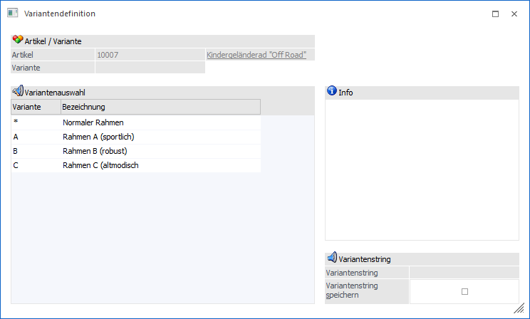
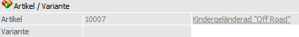
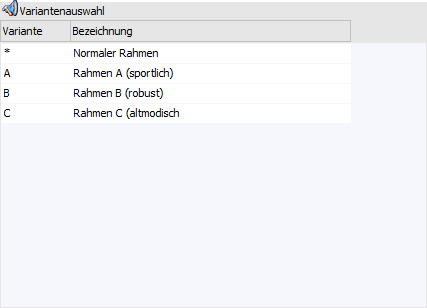
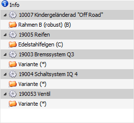
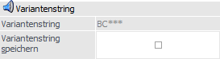
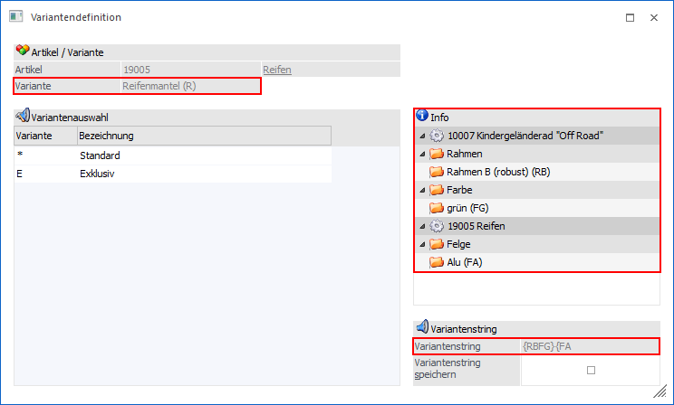
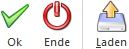

Wenn auf die Lupe neben dem Feld "Variante" bzw. "Variantenstring" oder F9 gedrückt wird, dann öffnet sich die "Variantendefinition".

Über die Variantendefinition kann aus den verfügbaren Varianten eines Produktionsartikels die gewünschte Variantenkombination ausgewählt werden.
Hinweis
Diese Kombination von Varianten bzw. Subvarianten aus mehreren Stücklistenebenen eines Produktionsartikels wird als "Variantenstring" bezeichnet.
Neben der manuellen Auswahl von Variantenstrings ist es ebenfalls möglich erzeugte Variantenkombinationen abzuspeichern und wieder zu laden. Der Bildschirm ist dabei in 4 Bereiche unterteilt:
ü Artikel
ü Variantenauswahl
ü Info
ü Variantenstring
Artikel

Ø Artikel
Es wird die Artikelnummer und die Bezeichnung des Artikels angezeigt, aus dessen Stückliste gerade eine Variantenauswahl getroffen wird.
Ø Variante
Wenn mit Subvarianten gearbeitet wird, dann wird an dieser Stelle die Bezeichnung der Variantengruppe angezeigt, aus welcher gerade eine Variantenauswahl getroffen wird.
Variantenauswahl

In dieser Tabelle werden nacheinander die angelegten Varianten (Stücklistenebene für Stücklistenebene) zur Auswahl vorgeschlagen. Die Auswahl der einzelnen Varianten erfolgt jeweils per Doppelklick.
Info

Die einzelnen Stücklistenebenen werden nach Auswahl der Varianten in Form eines Stücklistenbaums dargestellt.
Variantenstring

Ø Variantenstring
An dieser Stelle werden die ausgewählten Varianten in Form des Variantenkennzeichens dargestellt. Sollte in einer Stücklistenebene ohne Varianten gearbeitet werden, dann wird automatisch das Standardvariantenkennzeichen (hier "*") gesetzt.
Ø Variantenstring speichern
Durch die Aktivierung diese Checkbox, wird nach der Auswahl der letzten Variante bzw. durch Anwahl des Buttons "Ok" bzw. der Taste F5 die Variantensteuerung geöffnet. Dort kann der Variantenstring abgespeichert werden.
Subvarianten
Das Zusammensetzen eines Variantenstrings bei Subvarianten funktioniert identisch wie bei "normalen" Varianten. Subvarianten sind lediglich 2-stellig gekennzeichnet und die Subvarianten einer Stücklistenebene werden mit Start- und Endkennzeichen (hier "{" bzw. "}") versehen.
Außerdem wird in der Variantendefinition das Feld "Variante" gefüllt und der Variantenbaum detaillierter dargestellt.

Buttons

Ø Ok
Mit Hilfe des Buttons "Ok" bzw. der Taste F5 wird der bis zu diesem Zeitpunkt ausgewählte Variantenstring in das Ausgangsfeld übergeben.
Ø Ende
Durch Anwahl des Buttons "Ende" bzw. der Taste ESC wird das Fenster geschlossen und alle nicht gespeicherten Änderungen verworfen.
Ø Laden
Es wird die Variantensteuerung aufgerufen. Dort kann ein zuvor abgespeicherter Variantenstring geladen werden.